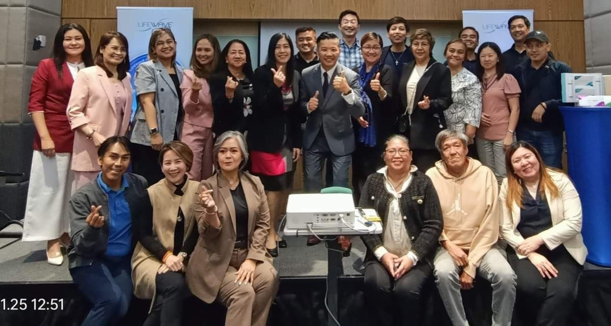
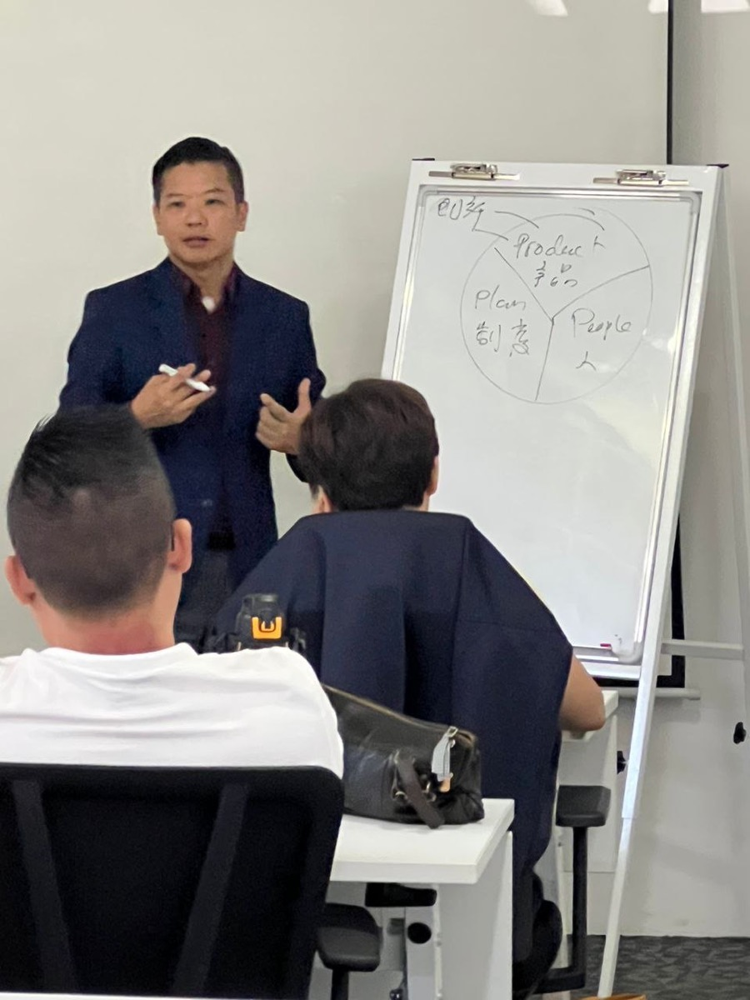
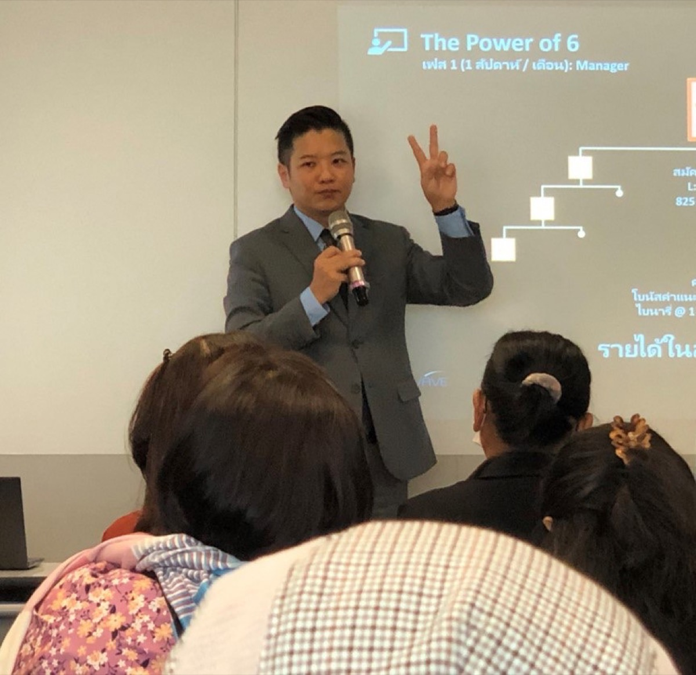

TEAM BUILDING
The Mentor Trap: When Helping Too Much Hurts Your Team
The most loyal mentors often build the most dependent teams. Why over-helping is a leadership failure disguised as generosity — and how to build true independence.
Practical wisdom for direct selling leaders who want to think deeper, lead better, and build sustainably.

TEAM BUILDING
The most loyal mentors often build the most dependent teams. Why over-helping is a leadership failure disguised as generosity — and how to build true independence.
RELATIONSHIP & COMMUNICATION
Not every lead is worth pursuing. The hidden costs of recruiting the wrong person — and when saying no is the most ethical, strategic move you can make.
INDUSTRY & ADAPTATION
Everyone chases Kuala Lumpur, Bangkok, Jakarta. But the smartest leaders are building in Ipoh, Kota Kinabalu, Surabaya. Here's why 'second-tier' cities quietly win.

PERSONAL GROWTH
The biggest myth in direct selling is that you need to be a natural salesperson. The truth is the opposite — the most successful people found their own unique path using the Ikigai framework.
RELATIONSHIP & COMMUNICATION
Most leaders follow up by pitching again. The real art is listening — understanding what your prospect is actually thinking, and what they need to hear versus what you want to say.
TEAM BUILDING
The first 72 hours after someone joins your team are the most critical window. What happens in those hours determines whether they become a long-term builder or a 90-day dropout.
RELATIONSHIP & COLLABORATION
Crossline and peer-leader relationships are the most underestimated factor in long-term success. Learn the three toxic patterns — and how cooperative competition builds empires.

INDUSTRY & ADAPTATION
The direct selling landscape has fundamentally shifted. Learn why yesterday's methods are losing you tomorrow's best leaders — and how to adapt without abandoning your principles.
MINDSET & ETHICS
Passive income is the most overused promise in direct selling. Here is what the income actually pays you for — and why understanding this changes everything.
MINDSET & ETHICS
Most people think about their first 90 days in direct selling. Here is a framework of five questions to evaluate whether your approach will still be working a decade from now.

TEAM BUILDING
The industry loves the word 'duplication.' But blind copying is why most teams plateau. Learn the difference between duplicating principles and duplicating methods.
STRATEGIC LEADERSHIP
The first two years are a battlefield. Most people who quit do so because they did not know which battles to fight. Here are the five that matter most.

TEAM BUILDING
If your team keeps leaving, the problem might not be them. Here are the three silent killers of retention that most leaders never see coming.
STRATEGIC LEADERSHIP
When should you personally prospect, and when should you step back to develop others? The answer is a sliding scale, not a switch.
STRATEGIC LEADERSHIP
Most direct selling trainers have only seen one side of the business. After 8 years in the field and 15 in corporate management, here is what both sides get wrong — and right.
STRATEGIC LEADERSHIP
You built the team. Revenue is growing. But somehow you are busier than ever. The problem is not your work ethic — it is your operating model.
MINDSET & ETHICS
In an industry where hype and shortcuts are common, ethical leadership is not just moral — it is the most powerful long-term strategy you can adopt.